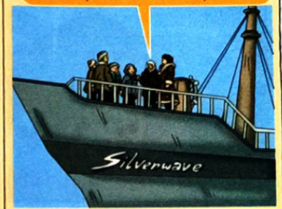
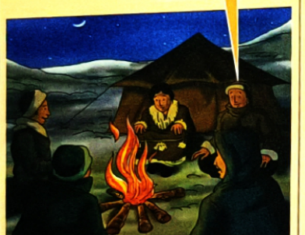
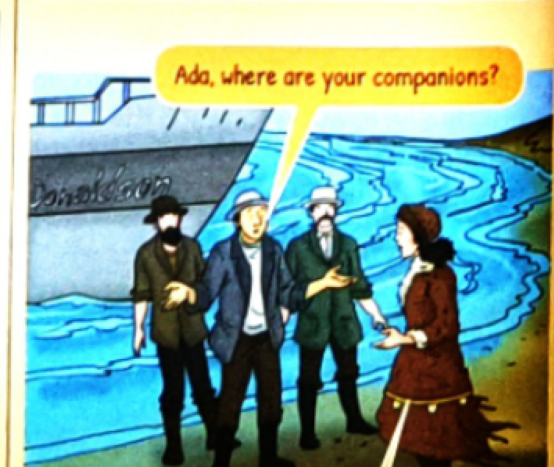
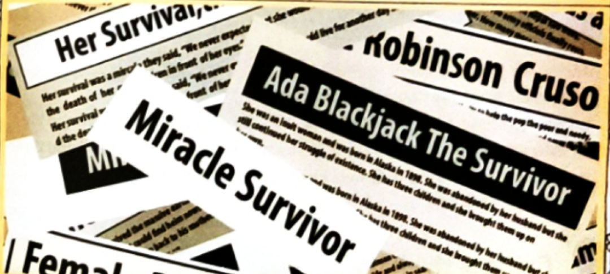

The True Saga of an Iñupiat Mother's Courage, Grit & Solitary Arctic Survival on Wrangel Island (1921–1923)
What defines a real hero? The textbook contrasts mythical figures with everyday heroes who perform miracles through human love and resilience:
The year was 1898 when Ada Delutuk was born into an Iñupiat Inuit family in Spruce Creek, Alaska. By 1921, the intervening years had been desperately hard for Ada: her marriage had dissolved after abandonment, two of her children had tragically passed away, and her surviving five-year-old son, Bennett, was suffering from severe tuberculosis.
Desperate to afford around-the-clock medical care for Bennett in an expensive Seattle hospital, Ada had no money and only her needle and thread: "I shall not let Bennett die," she whispered to her grandmother. "We are poor—we have no money and little food. But I can sew. I will find a way."
A few days later, a knock came at her humble wooden cabin door. In stepped Vilhjalmur Stefansson, a famed Arctic explorer: "I'm sending four men to explore the Arctic. They'll need a cook and a seamstress skilled at stitching warm fur clothing. I wish to colonize Wrangel Island, north of Siberia. I know your son is ill; I will ensure he receives the finest medical treatment and pay you fifty dollars a month."
Though terrified of the frozen wilderness and polar bears, Ada did not hesitate for a second: "I will go, sir, for my son. I can do anything for my son."
On 21st September 1921, Ada set out alongside four hardened adventurers: Canadian expedition leader Allan Crawford (20), and Americans Lorne Knight (28), Fred Maurer (28), and Milton Galle (20). When the men first saw Ada, they murmured doubts: "She looks so frail! She'll not survive in the bitter cold, Stefansson!" But Ada quietly replied: "I'll learn how to."

Stefansson assured the team: "I've put food for six months in the ship. The island is abundant with wildlife. I will send a relief supply ship in summer; meanwhile you will fend for yourselves."
As the ship navigated the icy Chukchi Sea, Ada looked across the churning waters: "Oh, I miss my son. But if I refuse, who will cook and sew for them? Bennett needs medical attention. I will keep my word." They pitched their tents on the desolate shores of Wrangel Island.
At first, game was plentiful. The men hunted seals and geese, built a snowhouse, and Ada stitched warm parkas and walrus-skin mukluks (boots) to protect them from the sub-zero blizzards.
However, the summer of 1922 came and went without any sign of Stefansson’s promised relief ship—heavy pack ice had completely blocked the sea routes. Winter set in with furious vengeance, and rations of tea, coffee, flour, and sugar dwindled rapidly.

Disaster struck when Lorne Knight fell grievously ill after swimming across the freezing Skeleton River. It was not an ordinary fever—Knight had developed debilitating scurvy. He could no longer walk or sit upright.
In January 1923, facing starvation, Crawford, Galle, and Maurer made a desperate gamble: "How long can we live like this? We'll all perish! We must cross the frozen Chukchi Sea on foot across seven hundred miles of shifting pack ice to reach the Siberian mainland and seek rescue."
Lorne Knight could not even stand. Ada vowed to stay behind alone in the igloo to nurse him: "Don't lose heart, Lorne. I'll stay back and look after you." The three young men set out into the blinding white horizon. Months passed without any word. Crawford, Galle, and Maurer were swallowed by the Arctic ice and never seen again.
For six months, Ada acted as nurse, cook, and provider. She chopped frozen driftwood with frostbitten fingers, melted snow for drinking water, cleaned Knight’s bedding, and cooked warm broth. In June 1923, despite Ada’s tireless care, Lorne Knight passed away. Ada was left completely alone on a deserted Arctic island, surrounded by howling polar winds and prowling polar bears.
Confronted by absolute isolation, Ada refused to surrender to despair: "His death has left me so utterly lonely. What shall I do in this ice-bound wilderness with no food or anyone by my side? But Bennett is in Seattle waiting for me. I must keep this fire burning."
Ada transformed into a resourceful master of survival. Though she had never fired a rifle before, she studied Lorne Knight's journals and Maurer’s hunting maps. She taught herself to set wooden box traps to catch Arctic foxes, shot birds with a shotgun, gathered moss, repaired a canvas skin boat (umiak), and built an elevated observation wooden tower to scan the horizon for approaching polar bears and rescue ships.
On 23 August 1923, nearly two full years after landing on Wrangel Island, Ada stepped out of her tent and rubbed her eyes. Cutting through the blue waters was a rescue schooner—the Donaldson.

The rescuers stepped ashore, stunned to find a neatly kept campsite and Ada dressed in clean reindeer-skin clothes she had stitched herself. "Ada, where are your companions?" they gasped. With tears in her eyes, she answered quietly: "They haven't returned for months. Lorne is dead. Please take me home."
When Ada returned to civilization, the global press erupted with sensational headlines, calling her the "Female Robinson Crusoe" and the "Heroic Miracle Survivor".

Reporters surrounded her, asking: "How did you survive? Were you a trained hunter? Have you always been brave?"
Ada replied with timeless humility: "No, not at all. It's only when I was solely responsible for Lorne and myself that I trained myself to hunt. I figured things out as I went along. I would never give up hope while I'm still alive. I had to do it for my son, Bennett."
True to her word, Ada collected her modest wages, took Bennett to Seattle, and paid for the specialized treatments that cured him completely. Ada Blackjack lived to the age of 85, forever remembered as an icon of maternal devotion, quiet courage, and unbreakable resilience.
| Stage 1: Ada at Home with Family | Stage 2: Ada Before Lorne Knight Dies | Stage 3: Ada After Lorne Knight Passes Away |
|---|---|---|
|
• Lived in severe poverty in Nome, Alaska. • Abandoned by husband, lost two children. • Desperately needed money to treat 5-year-old son Bennett's tuberculosis. • Agreed to join Arctic expedition as seamstress for $50/month. |
• Cooked meals and stitched waterproof fur boots/parkas for the 4 men. • Comforted the men as winter ice trapped their ship. • Sacrificially stayed behind on Wrangel Island to nurse bedridden Lorne Knight through scurvy. • Kept hope alive while 3 men vanished seeking help. |
• Completely alone in the frozen Arctic wilderness. • Taught herself to shoot rifle, trap foxes, and skin seals. • Built an elevated observation tower to guard against polar bears. • Kept fire burning for months until rescued by the Donaldson. |
Complete the book review of Trial by Ice: A Photo-Biography of Sir Ernest Shackleton from textbook page 72 by filling in the blanks with the correct words matching the clue in brackets.
A debilitating illness caused by vitamin C deficiency, resulting in severe lethargy, bleeding gums, joint hemorrhages, and organ failure.
To establish physical control over an uninhabited or foreign territory to build settlements and claim sovereignty.
Gradually shrinking, decreasing in size, amount, or strength (e.g. food supplies during winter).
A traditional open Inuit boat made of wooden frames covered with walrus or seal skins.
Verbs that require an object (direct or indirect) to complete their meaning. The action transfers from the subject to a receiver.
Example: Ada sewed fur parkas.
Verbs that do not require an object to make complete sense. The action stays with the subject.
Example: Ada survived in the Arctic.
| Sentence | Action (Verb) | Source (Subject) | What Action is About (Direct Object) | Receiver of Action (Indirect Object) |
|---|---|---|---|---|
| The explorers finally gave Ada the news of their expedition. | gave | explorers | the news of their expedition | Ada |
| Ada’s story has taught us the value of perseverance. | has taught | Ada’s story | the value of perseverance | us |
| Ladies and gentlemen, we present to you a heroic woman! | present | we | a heroic woman | you |
Normally, each syllable contains a vowel sound. However, in English, certain final consonants like /l/, /n/, and /m/ can form a syllable without a fully voiced vowel. These are called syllabic consonants.
| Survival Case Story | Immediate Threat | Biological / Mental Survival Instinct |
|---|---|---|
| Pamplona Bull Run | Stampeding angry horned bulls charging through cobblestone streets. | Adrenaline surge, heightened reflexes, subconscious sprinting and obstacle evasion before cognitive fear registers. |
| Mitsutaka Uchikoshi (Japan) | Fell unconscious on a remote freezing mountain; stranded for 24 days without food or water. | Spontaneous hypothermic metabolic hibernation: core body temperature dropped to 22°C, slowing organ consumption to prevent brain death. |
| California Toddler | Alone in a house for nearly a week after mother's unexpected demise. | Primal drive for sustenance: opened and ate accessible pet food to maintain caloric and hydration requirements. |
Made history in 1984 as the very first Indian woman to conquer the peak of Mount Everest, inspiring generations of mountaineers.
The world’s first female amputee to scale Mount Everest and the highest peaks across all seven continents after surviving a tragic train assault.
Became the first woman officer in the Indian Army to be operationally deployed at the world’s highest battlefield—the Siachen Glacier (Kumar Post at 15,632 ft).
Pioneering combat pilots inducted into the Indian Air Force fighter squadron, breaking gender barriers in supersonic combat flight.